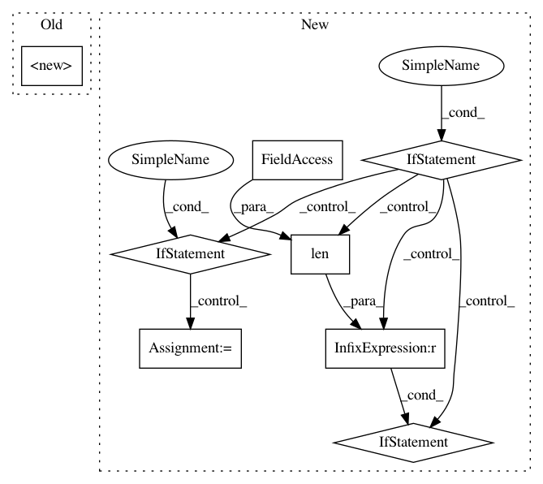

f5760b43ca0f5fe11fdafe803e9be54fc56d0da6,art/detection/features.py,KNNPreds,__init__,#KNNPreds#Any#Any#Any#Any#Any#Any#,172
Before Change
from sklearn.neighbors import KNeighborsClassifier
super().__init__(classifier)
if len(y.shape) > 1:
y = y.ravel()
self.layerid = layerid
After Change
y = y.ravel()
// Ensure that layer is well-defined:
if type(layer) is str:
if layer not in classifier.layer_names:
raise ValueError("Layer name %s is not part of the graph." % layer)
self._layer_name = layer
elif type(layer) is int:
if layer < 0 or layer >= len(classifier.layer_names):
raise ValueError("Layer index %d is outside of range (0 to %d included)."
% (layer, len(classifier.layer_names) - 1))
self._layer_name = classifier.layer_names[layer]
else:
raise TypeError("Layer must be of type `str` or `int`.")
layer_output = []
for b in range(x.shape[0] // batch_size + 1):
begin, end = b * batch_size, min((b + 1) * batch_size, x.shape[0])
In pattern: SUPERPATTERN
Frequency: 3
Non-data size: 8
Instances
Project Name: IBM/adversarial-robustness-toolbox
Commit Name: f5760b43ca0f5fe11fdafe803e9be54fc56d0da6
Time: 2018-11-28
Author: ambrish.rawat@ie.ibm.com
File Name: art/detection/features.py
Class Name: KNNPreds
Method Name: __init__
Project Name: tensorflow/cleverhans
Commit Name: f7715f63c17832f66e54164cc0ae3cb0e4afc4a3
Time: 2017-07-09
Author: nicholas@carlini.com
File Name: cleverhans/attacks.py
Class Name: Attack
Method Name: generate_np
Project Name: IBM/adversarial-robustness-toolbox
Commit Name: f5760b43ca0f5fe11fdafe803e9be54fc56d0da6
Time: 2018-11-28
Author: ambrish.rawat@ie.ibm.com
File Name: art/detection/features.py
Class Name: MeanClassDist
Method Name: __init__